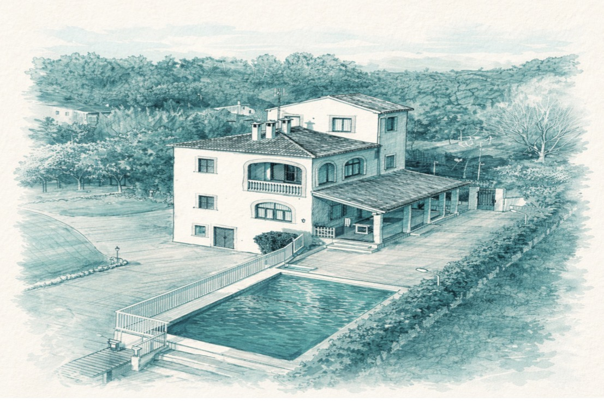

La recuperación empieza con una decisión.
Un centro privado de rehabilitación para adicciones a drogas y alcohol, en Mallorca.
Reserva una Valoración Confidencial
Un centro privado para la recuperación de adicciones.
Suspiros es un centro privado residencial para la adicción a drogas y alcohol, ubicado cerca de Palma de Mallorca, España. Ofrecemos tratamiento confidencial y con supervisión médica para adultos que están listos para un cambio, en un entorno tranquilo y estructurado, pensado específicamente para la recuperación.
Cada residente recibe una valoración individual antes de llegar, y un plan de tratamiento personalizado construido en torno a su propia historia y sus objetivos. Nuestro enfoque combina desintoxicación con supervisión médica, terapia individual y de grupo, y la tradición de los 12 Pasos, junto con prácticas holísticas como el yoga y el mindfulness — porque creemos que una recuperación duradera exige tratar a la persona completa, no solo la adicción.
Un equipo multidisciplinar de médicos, terapeutas y key workers está presente en el centro las 24 horas. Desde tu primera consulta confidencial hasta tu plan de continuidad, nunca se te entrega simplemente un calendario para seguir en soledad — el mismo equipo te acompaña en cada etapa.
Suspiros se encuentra en una villa residencial privada rodeada de huertos de naranjos y jardines, con piscina, una terraza cubierta y espacios tranquilos para la reflexión junto a espacios compartidos para el trabajo en grupo y la conexión. Está pensado para sentirse como un hogar, no como un hospital — privado, sin prisas, y alejado de las presiones del día a día.
Cada consulta y cada estancia se tratan con total confidencialidad. Suspiros está pensado para adultos que buscan tratamiento residencial por adicción a drogas o alcohol — ya sea un primer paso, o un regreso tras un intento anterior — y para las familias que quieren entender cómo ayudar.
Más sobre nuestro enfoqueSea cual sea el motivo, podemos ayudarte.
Un proceso claro y estructurado.
Ningún residente sigue el mismo camino, pero todos los caminos se construyen sobre los mismos cinco pilares.
Un médico gestiona tu estabilización física con seguridad, las 24 horas, antes de comenzar el trabajo terapéutico. Nada se precipita, y nada queda sin supervisión.
Cada residente recibe una valoración individual y un plan de tratamiento construido en torno a su propia historia y sus objetivos, revisado regularmente con su key worker a medida que avanza.
Nuestro programa está basado en la tradición de los 12 Pasos, combinada con terapia basada en la evidencia y una rutina diaria estable — no vinculado a ninguna religión, y abierto a personas de todos los orígenes.
Cuando es apropiado y deseado, las sesiones familiares pueden formar parte del plan, y mantenemos informados a los seres queridos durante toda la estancia.
Antes de irte, construimos juntos tu plan de continuidad, para que tu recuperación siga con estructura y apoyo al volver a casa.
Cuidado para la persona completa.
En Suspiros, cada programa se construye en torno a la persona, no a una plantilla fija. El tratamiento combina desintoxicación con supervisión médica, terapia individual y de grupo, y la tradición de los 12 Pasos, junto con prácticas holísticas como el yoga y el mindfulness, para que tu cuidado atienda tanto el lado físico como el emocional de la recuperación.
Desintoxicación Médica
Un médico supervisa tu estabilización física, con seguridad y las 24 horas, antes de comenzar el trabajo terapéutico.
Sesiones Individuales
Un key worker se reúne contigo cada semana para construir y ajustar tu plan de tratamiento personal.
Terapia de Grupo y Talleres
Grupos diarios y talleres sobre prevención de recaídas, cambio y bienestar emocional.
Prácticas Holísticas
Yoga, meditación y mindfulness, integrados en tu rutina diaria.
Un equipo dedicado, las 24 horas.
Ninguna persona sola puede sostener todo lo que necesita una recuperación. Por eso cada residente en Suspiros cuenta con el apoyo de un pequeño equipo multidisciplinar que trabaja junto en torno a un mismo plan — no un único terapeuta trabajando en solitario.
Un lugar tranquilo para sanar.
Un entorno residencial pensado tanto para el descanso como para la recuperación — privado, tranquilo y cerca de la naturaleza, en las afueras de Palma de Mallorca.
Apoyo para quienes los quieren.
La adicción afecta a toda la familia, no solo a la persona en tratamiento. Os mantenemos informados, damos la bienvenida a las visitas cuando vuestro ser querido se ha asentado, y facilitamos llamadas y videollamadas regulares durante su estancia.
Nuestro equipo de admisiones y contacto familiar es vuestro punto de contacto desde la primera consulta, para que nunca os quedéis con dudas sobre los siguientes pasos.
Más apoyo para familiasCuando alguien a quien quieres necesita ayuda pero aún no lo ve.
Es doloroso ver sufrir a alguien que quieres por una adicción, sobre todo cuando esa persona aún no lo ve. No tienes que enfrentarlo en soledad. Nuestro equipo de admisiones y contacto familiar puede guiarte sobre cómo plantear la conversación, con compasión y claridad, y ayudarte a entender qué apoyo existe — para él o ella, y para ti.
Habla con nuestro equipo de contacto familiarLo que nos preguntan.
Sí. Cada consulta y cada estancia son totalmente privadas.
Los programas suelen durar de 8 a 12 semanas, adaptados a ti.
Sí. Un médico supervisa cada paso, día y noche.
Sí, tras un periodo inicial de adaptación, con cita previa.
Abrimos a principios de 2027. Ya estamos atendiendo consultas y valoraciones confidenciales antes de esa fecha.